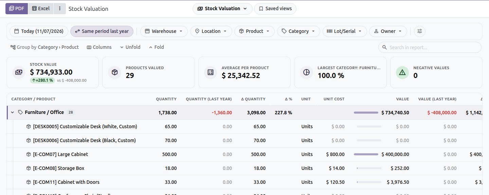

The value of your stock on any date, on screen, with filters at the top and export to PDF and Excel. The inventory reports show the stock values too: the value of dead stock, of old stock, of what was found or lost.
By category, product, warehouse, location, lot or owner. The values are Odoo’s own stock valuation (standard price, average cost or FIFO) on the chosen date, so they match the valuation of the products.
| ✓ | The share of each group in the total value, the costing method of each product. |
| ✓ | Stock value in Stock on Hand, Stock Ageing (and the value of the old stock), Slow-Moving & Dead Stock (value of the dead and slow stock), Inventory Summary (opening and closing value), Stock Card, Stock Turnover and Adjustments & Scrap. |
| ✓ | ABC Analysis ranks the products by their cost at the end of the period. |
| ✓ | Stock Card: the value of each receipt and issue and a running value, with revaluations and cost changes on their own line. |
| ✓ | Compare the stock value with the previous period or last year. |

Installs on its own with Inventory Reports when Accounting (stock valuation) is installed. The report is in Inventory › Reporting › Inventory Reports › Stock Valuation.
Odoo Mates · odoomates@gmail.com